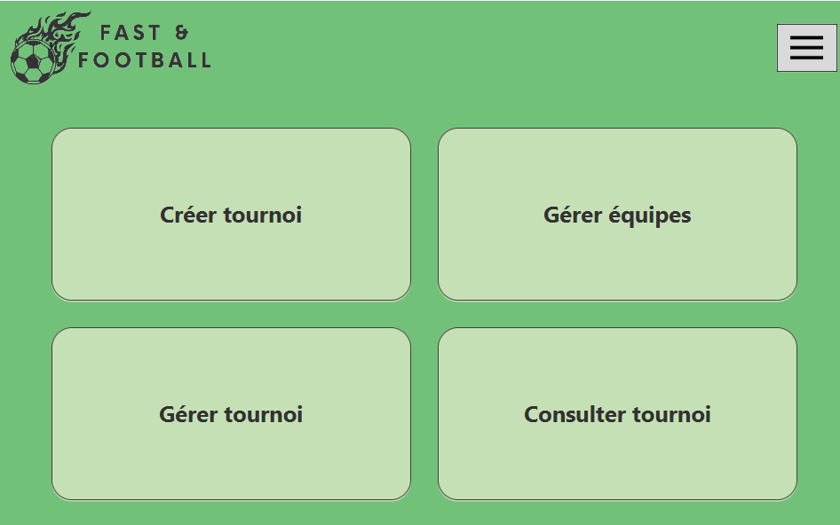
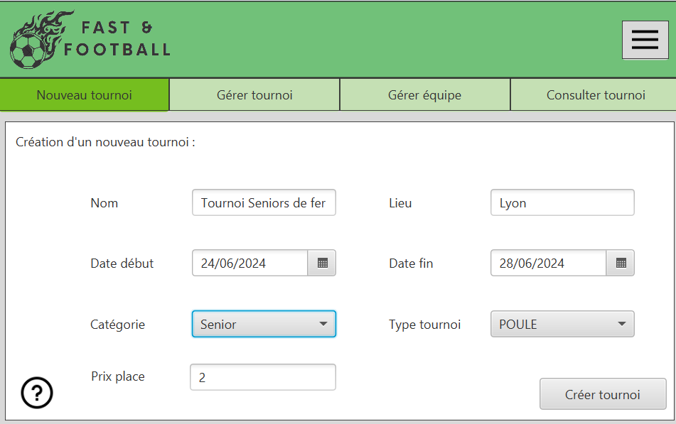
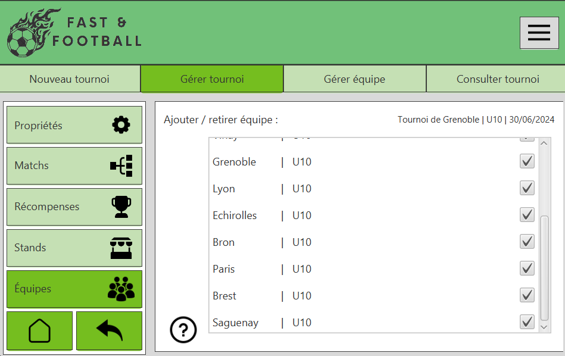
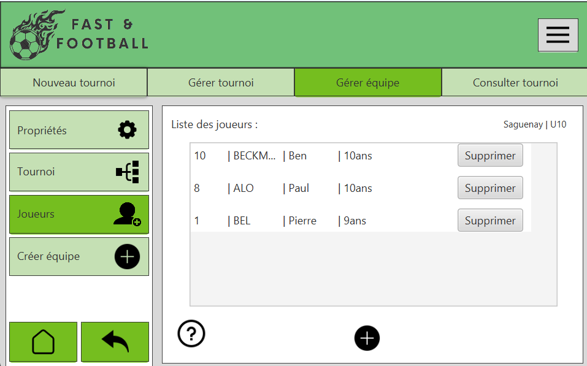
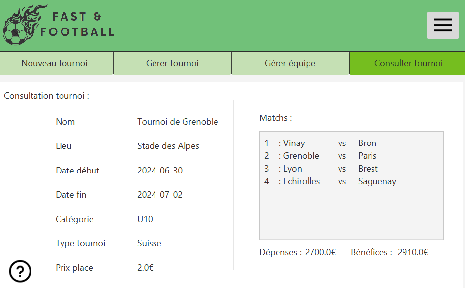
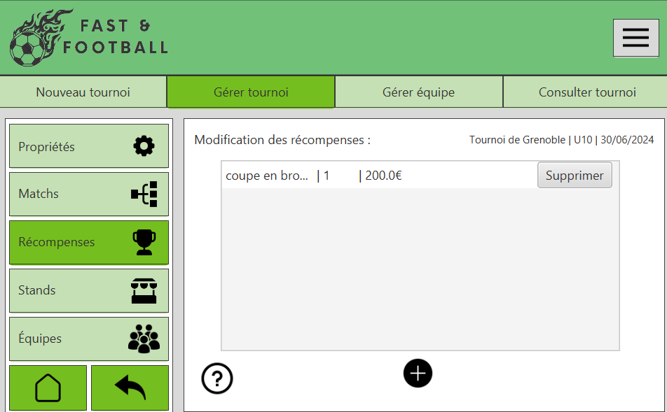
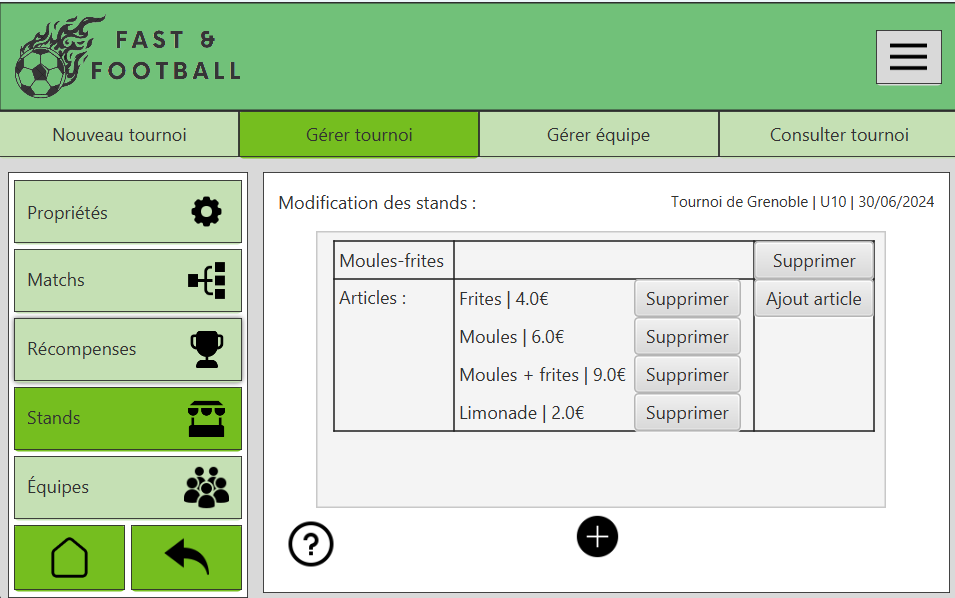
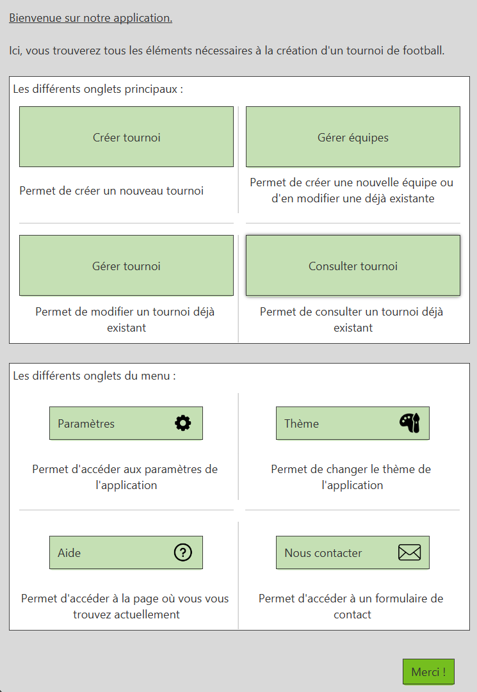
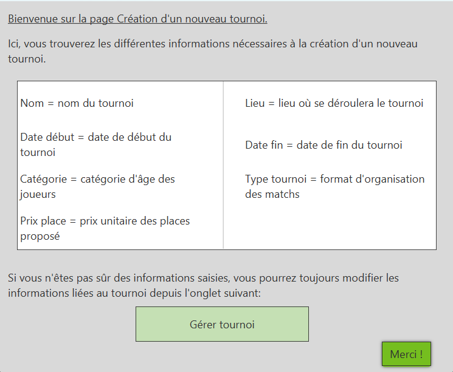

Création d'un logiciel de gestion de tournois de football
Gestion de plusieurs éléments liés à un tournoi de football
Détails du tournoi, équipes, joueurs,matchs




Récompenses, stands


infobulles d'aides pour chaque page


Compétences développées
Travail en collaboration
Développement Java / Java FX
J’ai appris à collaborer au sein d’une équipe et à bien segmenter les tâches afin de gagner du temps.
J’ai beaucoup développé mes compétences en Java car j'ai dû acquérir des connaissances en plus de celles vues en cours. De plus, Java FX était totalement nouveau pour moi.